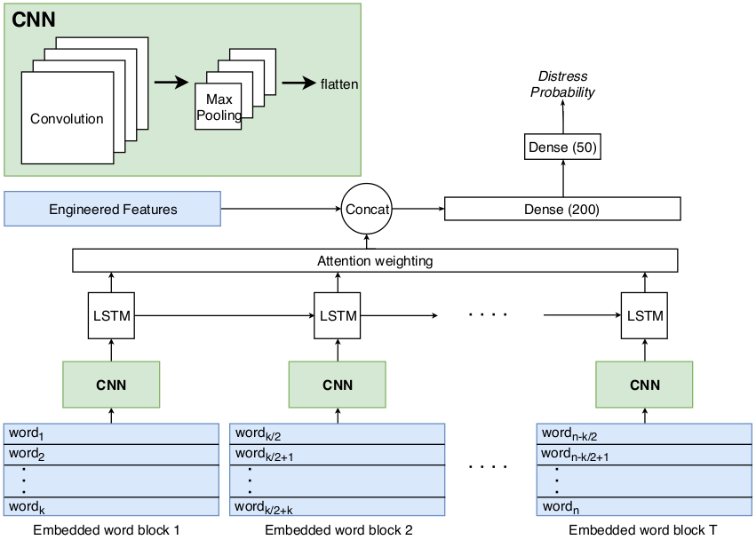

Predicting Distresses using Deep Learning of Text Segments in Annual Reports
"What" part of the paper
It is a classification problem, give the auditor's report and management's statement from the annual report of a company, including some of the financial features of the company, prediction is made whether the company will go in distress. Here distress implies bankruptcy.
"How" part of the paper
Previous work has been done considering only financial variables about a company. In this work, the financial variables are concatenanted with information from auditor's report and management's statement from annual report of the company. Results had improvements which indicated that information from annual report also plays import role in giving out information about distresses within a company.
The financial variables include 50 featues out of which 44 were continuous and 6 were categorical. Continuous features include Net profit, Return on equity, Liquid assets, etc and categorical features include Sector, Region, etc.
The Text Processing steps for auditor's report and management's statement is as follows:
- Punctuations, new lines and tabs were removed and case was made to lower case.
- Porter Stemming.
- Removal of stop words. Numbers replaced by generic number token.
- Named entities were removed(using spacy)
- Words with frequency less than 25 was ignored with respect to entire dataset.
The details about the Main Model is given in this section. Textual data from Auditor's report and Management's statement is converted to half overlapping blocks of words. First block contains 1 to k words then second block contains k/2 to (k/2 + k) words and so on. Pretrained word2vec is used to get a matrix representation for each block.
For each matrix representation of block, it is passed through a convolutional layer having different filters followed by max pooling layer. It was flattened at the end after max pooling to get a fixed size vector representation of the block(remember the block size is fixed with k words).
These vector representation is passed through LSTM layer one after another to incorporate the sequence information. Attention is used as a scaled addition of all hidden states of LSTM layer which gives a representation of all the textual blocks of annual report.
This representation is concatenated with the finanacial variables discussed before and a feed forward neural network(2 hidden layers deep) is used to classify distress.